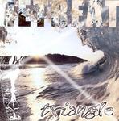

| Artist: | Triangle |
| Title: | Retreat |
| Label: | self produced |
| Length(s): | 58 minutes |
| Year(s) of release: | 2004 |
| Month of review: | [06/2005] |
| 1) | The Summer Died... | 6.29 |
| 2) | This Day | 8.14 |
| 3) | Goodbye | 4.26 |
| 4) | This Vacuum Inside | 8.25 |
| 5) | We Will Wait | 5.59 |
| 6) | Retreat Part 1 | 4.20 |
| 7) | Heroes Are | 6.10 |
| 8) | ... A Winter's Death | 9.45 |
| 9) | Retreat Part 2 | 3.54 |
Goodbye is a somewhat vague and moody tune with guitar noodlings echoing in the back, again very much in Twelfth Night tradition. It seems the band is slipping into gear. Listen for instanced to the pace change in this song with its highly percussive character, and western twang in the guitar. Excellent. The songs ends bombastically.
This Vacuum Inside picks up on the marimba like percussion. I am reminded of a song like Secret Fence of Egdon Heath, which is similarly percussive (and also the best song Egdon Heath made, in my opinion). This is quite an unexpectedly slow build-up with the guitarist sharp and in good form. The bass player provides solid backing. It takes two and a half minute for the music to get to the next 'level' in which the drums enter the picture. This is almost psychedelic rock, and well contrived at that. At over four minutes the calm, somewhat colorless, vocals set in. In view of the content of the lyrics, he could do little else. The next chorus has more emotion, more fire.
We Will Wait opens with typical progrock rhythms, while the guitarist show his versatility once more. The melody he plays is a bit Arena like, but he does not go for the same bombast. This song has some poppy aspects in the form of some frolic keyboard playing. The chorus is nicely urgent and pacey.
We then come to Retreat Part 1, which opens with bass and keyboards. A moody atmosphere is built, with a bit of piano and vocal wailings coming throughout the song (which should I guess be called an instrumental). Heroes Are continues the line of the vocal tracks, with the typical vibrant guitar sound, which does give the band its own face (although it also reminds me of Collage). ... A Winter's Death builds on the song. Here we return to the Twelfth Night influence, the same pace, the same drive. The vocalist however is nowhere near Geoff Mann, he sings much cleaner. Halfway the band tries its hand at backing vocals, but this does not turn out as well as it should. The somber second part of the track is good, though, also the backing. The guitar dominates this part.
Retreat Part 2 is the closer of the album with highly symphonic drums and keyboards, and the guitar meandering about.